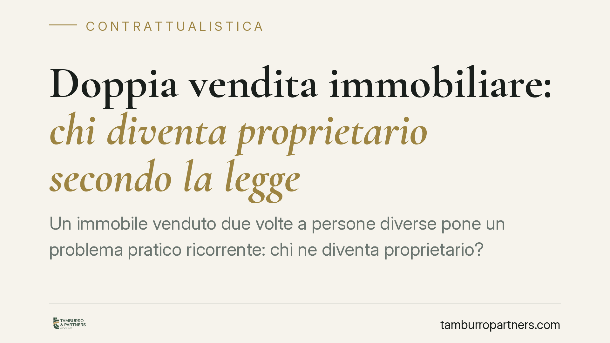

Doppia vendita immobiliare: chi diventa proprietario secondo la legge
Un immobile venduto due volte a persone diverse pone un problema pratico ricorrente: chi ne diventa proprietario? La risposta non premia chi firma per primo, ma chi trascrive per primo l'atto nei registri immobiliari. Un principio che ribalta l'intuito comune e che rende la fase successiva alla firma decisiva quanto quella della trattativa.

Il caso: un immobile, due acquirenti
Capita che lo stesso venditore alieni il medesimo immobile a due soggetti distinti, in momenti diversi. È la cosiddetta doppia alienazione immobiliare. La domanda è immediata: tra i due compratori, chi acquista realmente la proprietà?
La tentazione è rispondere che vince chi ha firmato per primo. Ma l'ordinamento segue una logica diversa, fondata sulla pubblicità dei registri immobiliari.
Inquadramento normativo
L'art. 1376 del Codice civile stabilisce il principio del consenso traslativo: nei contratti che hanno per oggetto il trasferimento di un diritto, la proprietà si trasmette per effetto del consenso legittimamente manifestato. In astratto, dunque, la proprietà passerebbe già al primo acquirente al momento della firma.
Questo principio, però, si scontra con l'esigenza di tutelare i terzi. Interviene allora l'art. 2644 del Codice civile, che regola gli effetti della trascrizione. La norma prevede che gli atti non trascritti non hanno effetto nei confronti di chi ha acquistato diritti sull'immobile e li ha trascritti anteriormente. In altre parole: tra due acquirenti dallo stesso venditore, prevale chi per primo ha trascritto il proprio acquisto nei pubblici registri, a prescindere dalla data del contratto.
La trascrizione è la formalità con cui l'atto viene reso pubblico presso la Conservatoria dei registri immobiliari (oggi Agenzia delle Entrate - Servizi di pubblicità immobiliare). Serve a rendere l'acquisto opponibile ai terzi, cioè valido e conoscibile anche verso chi non ha partecipato all'atto.
La Cassazione civile ha ribadito costantemente che la trascrizione è il criterio dirimente. Vince chi trascrive per primo, anche se il secondo acquirente conosceva l'esistenza della prima vendita. Rileva solo la priorità della formalità, non la buona o mala fede soggettiva sul piano dell'acquisto della proprietà.
Cosa cambia in concreto
Il primo acquirente rimasto senza immobile non resta del tutto privo di tutela. Verso il venditore che ha alienato due volte lo stesso bene può agire per il risarcimento del danno ai sensi dell'art. 2043 del Codice civile, ossia per responsabilità da fatto illecito. Il venditore, infatti, ha violato l'obbligo assunto con la prima vendita.
In alcuni casi la giurisprudenza riconosce anche una responsabilità del secondo acquirente che abbia agito in mala fede, cioè consapevole della prima alienazione e con l'intento di sottrarre il bene: qui la tutela può estendersi al secondo compratore in concorso con il venditore. Resta però fermo che la proprietà appartiene a chi ha trascritto per primo.
La conseguenza pratica è netta: firmare il preliminare o anche il rogito non basta. Fino alla trascrizione, l'acquirente è esposto al rischio che un altro soggetto, munito di atto successivo ma trascritto prima, prevalga.
Cosa fare in concreto
- Trascrivi senza ritardo. Cura che la trascrizione dell'atto notarile avvenga nel minor tempo possibile: è il momento che consolida l'acquisto verso i terzi.
- Effettua le visure aggiornate. Prima del rogito verifica in Conservatoria che non esistano trascrizioni, pignoramenti o vincoli a carico dell'immobile o del venditore.
- Valuta la trascrizione del preliminare. L'art. 2645-bis del Codice civile consente di trascrivere il contratto preliminare, offrendo una copertura anticipata rispetto ad alienazioni successive.
- Affidati al notaio per il controllo continuativo. Il professionista verifica la situazione dei registri fino all'atto ed esegue tempestivamente la formalità.
- Conserva la documentazione della trattativa. In caso di doppia vendita, prove chiare su date e comunicazioni sono utili per un'eventuale azione risarcitoria.
Un principio da non sottovalutare
Nella compravendita immobiliare la fase successiva alla firma è tanto delicata quanto quella della trattativa. La priorità nella trascrizione può determinare l'esito di un conflitto tra acquirenti. Consigliamo di trattare la trascrizione non come un adempimento burocratico, ma come il momento in cui l'acquisto diventa realmente sicuro.
---
*Contributo informativo a cura di Tamburro & Partners - Avv. Giuseppe Tamburro. Non costituisce parere legale.*
Ogni contratto ha il suo equilibrio.
Se vuoi una revisione delle clausole o una redazione su misura, scrivi allo studio. Ti rispondiamo entro un giorno lavorativo.